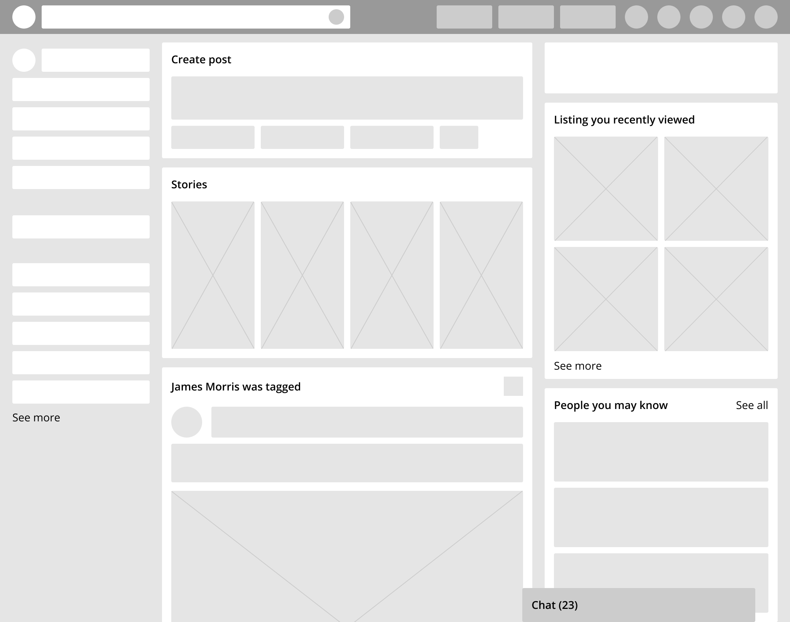

Site Name
Name: CineVault
Reason: I chose this name because it evokes the idea of a secure, organized "vault" where users can discover and safely store their favorite cinematic treasures.
Name: CineVault
Reason: I chose this name because it evokes the idea of a secure, organized "vault" where users can discover and safely store their favorite cinematic treasures.
The purpose of CineVault is to provide a fast, modern interface for exploring the world of cinema. The site solves the common problem of "what should I watch tonight?" by allowing users to:
Key questions the site will answer for the user:
The site will use a "Dark Mode" aesthetic. This reduces eye strain and allows the colorful movie posters to stand out visually.
| #22254b (Primary) |
#373b69 (Secondary) |
#ffa500 (Accent) |
Used for all headings (h1-h6) and navigation links. It is a geometric, clean font that gives the site a modern app-like feel.
The quick brown fox jumps over the lazy dog.
Used for paragraphs, movie descriptions, and lists. It is highly legible on small screens and long blocks of text.
The quick brown fox jumps over the lazy dog.
Visual sketches of the site layout.
